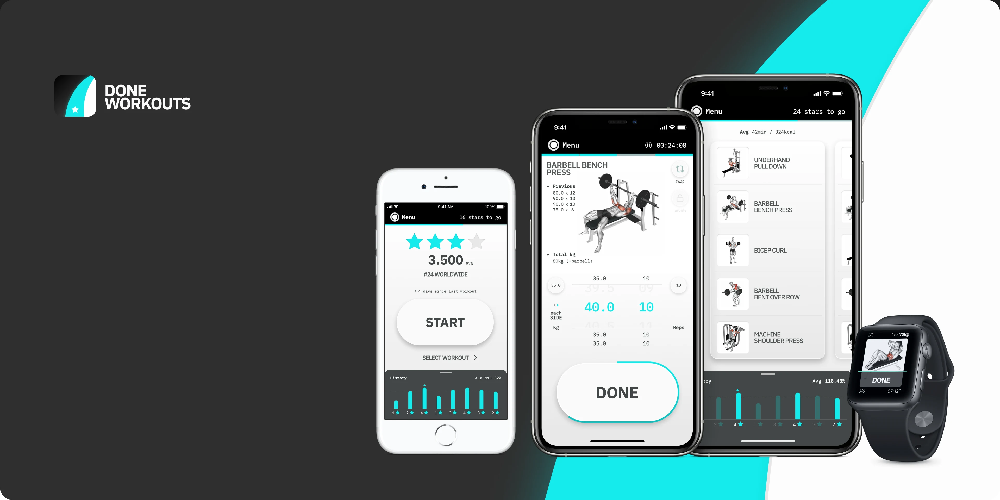
This was my garage moment — me and 3 friends actually started this project by meeting in the ground floor of my then employer’s offices.
The team was comprised of a Fitness Coach, Frontend and Backend developers, and myself, juggling multiple roles between the four. I was the acting PO, trying to set the vision and keep everyone on the same page whilst we worked on this in our spare time, trying to meet at least once a week to sync. Most of the initial work was cooked up between me and the Fitness Coach, balancing what would be a great user experience, but also make sense for more seasoned users (although we had a clear bias towards the more beginner type).
We launched on the App Store March 18th, 2020 — the following month all the gyms on the planet were closed under lockdown mandates. Ouch.
co-founder
March 2018 - April 2020
- Market
- /B2C
Health & Fitness - platform
- Native iOS
- location
- London, UK
an app that takes DONE as input, and NEXT as output
Our first big insight was that we all wanted a no-nonsense app, that just told us “what to do” in the gym, and then fade away until we’re done with the current thing and need to know what’s next. That became “an app that takes DONE as input, and NEXT as output”.
Agreed essentials
- Name of exercise
- Image/Video of exercise
- Load x Reps
- Set count
- Workout overview
Starting blocks
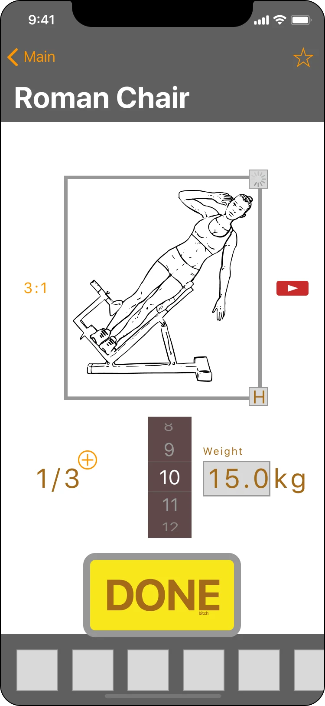
Exercise view
My first big focus was the exercise view — this would be the make or break screen for the app. It was also the fundamental building block for our two engineers to get started on our underlying architecture.
Top section would be visual information, and closer to the bottom where the thumb reaches, we’d have our inputs.
Set / Reps / Load left to right by likelihood of user interaction.
The “DONE as input” insight was present from the very first draft.
Visual info
Primary input
Secondary input
Focus on inputs
On the first iteration I tried to assign input methods lightly based on the logic that Sets changed the least, Reps a bit more but still not much, and Load had the biggest potential for change range and frequency. Following this, I used a stepper for Sets, a Picker for Reps, and Numpad input for Load. That was not the right approach — but it gave me a starting point.
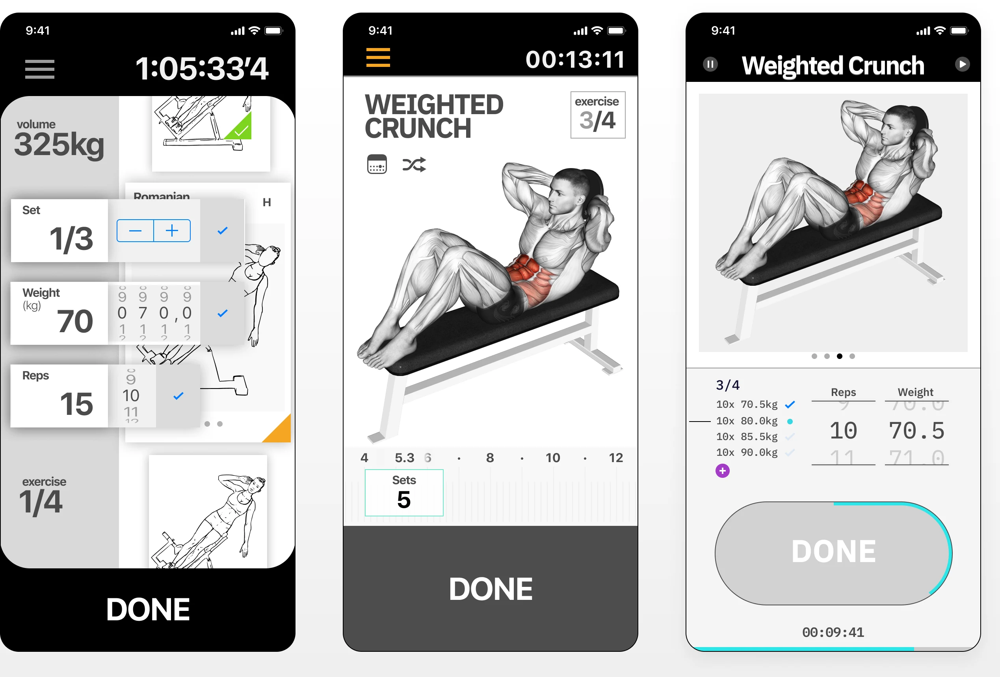
Numpad to picker
Using the numpad had the potential to disrupt the on-screen elements, pushing stuff away from where it was, forcing the user to adjust once, and then again when dismissed. This led me to trying the picker for Load as well (which was working great on Reps) since it was “just one more digit”. So I took a page out of Samsonite, and went full suitcase lock.
Vertical to horizonal
The stepper/picker/picker combo didn’t work either as it covered the content, and had debatable reachability. But I liked the rolling/scrolling aspect of it, which led to trying a “horizontal picker” where the user would tap (and hold) the input, and a ruler would show behind it. This was *fun* to use and whimsical, but not practical outside of a pomodoro timer.
Side by side pickers was the way to go.
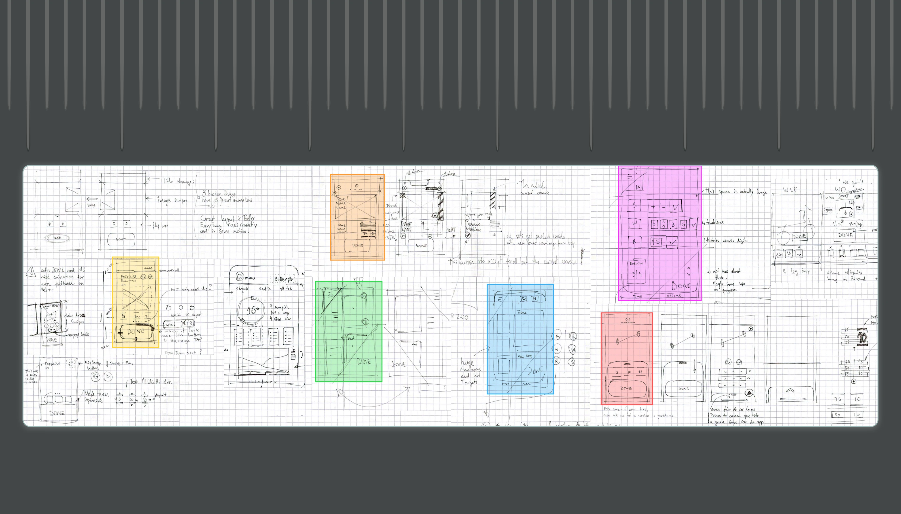
Exploration done
Once I felt confident with the basic structure of the main elements, it was time to map out all the fundamental secondary actions and flows (deleting sets, navigation between exercises, etc).
It also allowed us to start prototyping and do some light testing with family and friends.
This gave our second big insight: Swap.
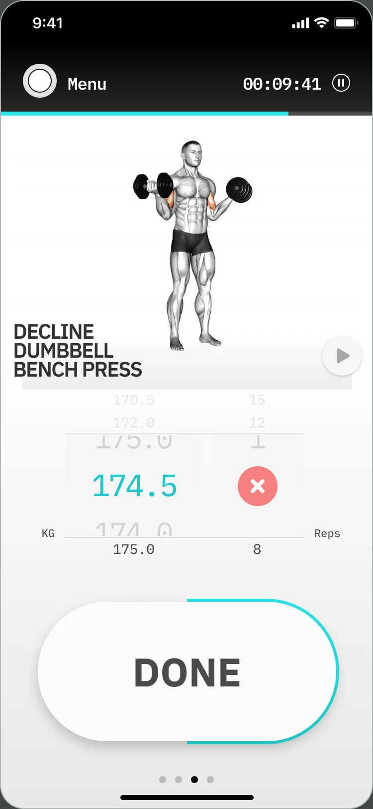
Delete set
Instead of a dedicated button or action, “delete” replaces zero in the Reps picker since it’s the same as a “zero reps set”.
In-workout navigation cue
Our use cases did not really anticipate anyone jumping multiple exercises ahead, and rather just go back and forth upon completion. This was however an important visual cue that you could side swipe to navigate.
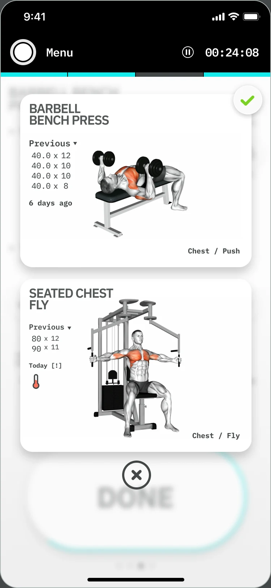
Swapping exercises
When the next exercise requires a machine that’s taken, the user is faced with generally two options: skip the exercise and go to the one after that (returning to this one later with no guarantee that’d be free), or politely ask the other member to share the machine and alternate (which usually takes a lot more time).
Swap offers the user similar exercises, that target the same muscle groups, such as a push up in exchange for a bench press, allowing the user to avoid longer breaks and still workout all the muscle groups planned for that session.
live testing
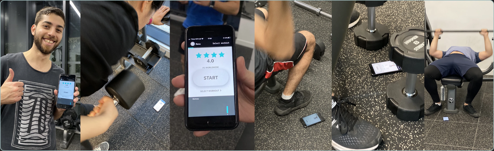
Once we had all screens and a full workout flow, we opened up testing outside of friends and family, and leveraged our Fitness Coach’s gym residency, to do full workout sessions side by side with the testers, gather live feedback, and discuss their inputs.
It was a great opportunity to dissect some suggestions and really see the impact they had in the workout as they were going through it.
Onboarding
We had a simple algorithm in place that picked from a set of manually made workouts, and calculated initial weight loads according to the user’s fitness metrics, and goal selection.
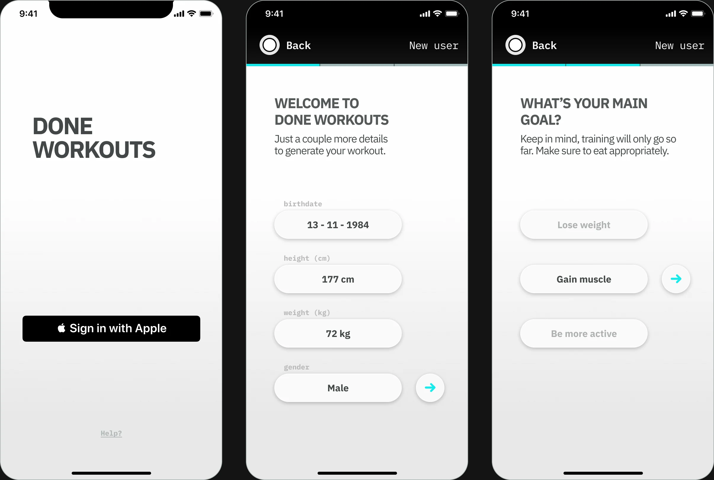
Home
Home presented the user’s average star score (which was based on completion% of each workout) and overall session history, which the user could pull up to see more details.
The history drawer would display specific info according to the selected workout, on the carrousel view.
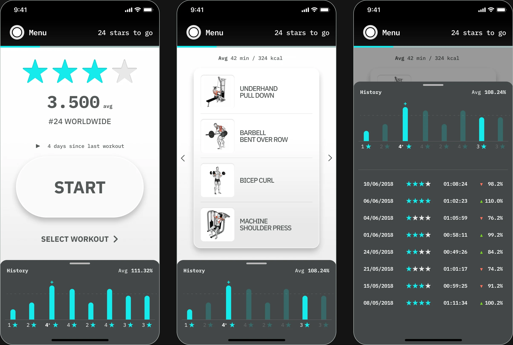
Workout done.
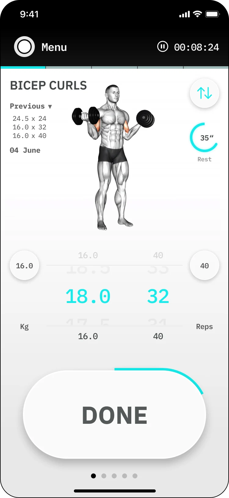
Exercise info
Exercise name, and record of the previous completed session, with date.
Exercise video
Auto-plays in loop. The user can tap to pause and it’ll resume on tap or swipe.
Call back
Helps the user quickly set the picker with the previous, or default value (derived from the last complete workout session).
DONE
Tapping saves the set values and marks the set complete, moving to the next set (or next exercise if no sets remain). The progress loop represents completion of the exercise based on complete Reps vs remaining.
Workout overview
One cell per exercise. Has 4 possible states: Incomplete, Current, Complete, Deleted.
Swap
If the current exercise is already a swapped instance, it’ll change color.
Complete set
When a user taps DONE, the current picker values are saved to a set, and the picker moves down one row, pushing the complete set above it.
Active set
The active set is represented by the picker-pair. Load allows for 1 decimal [.0 or .5], and Reps do not have decimals (nor zero, which instead shows an which triggers the delete prompt).
Navigation (only visual)
Visual cue for side swipe navigation.
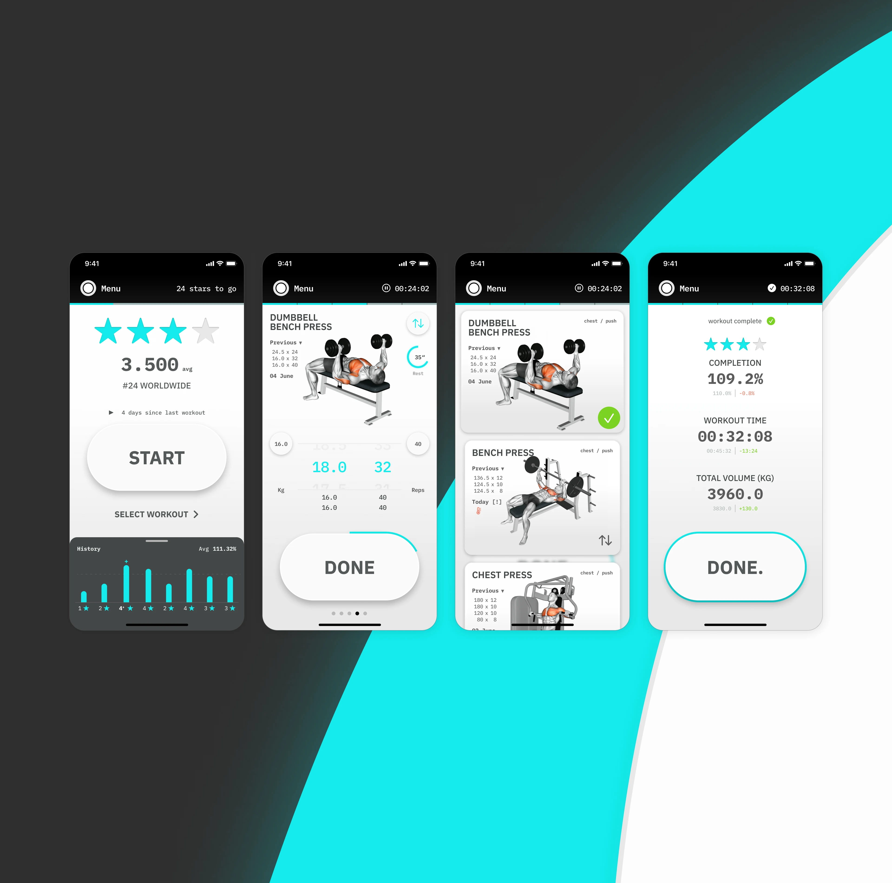